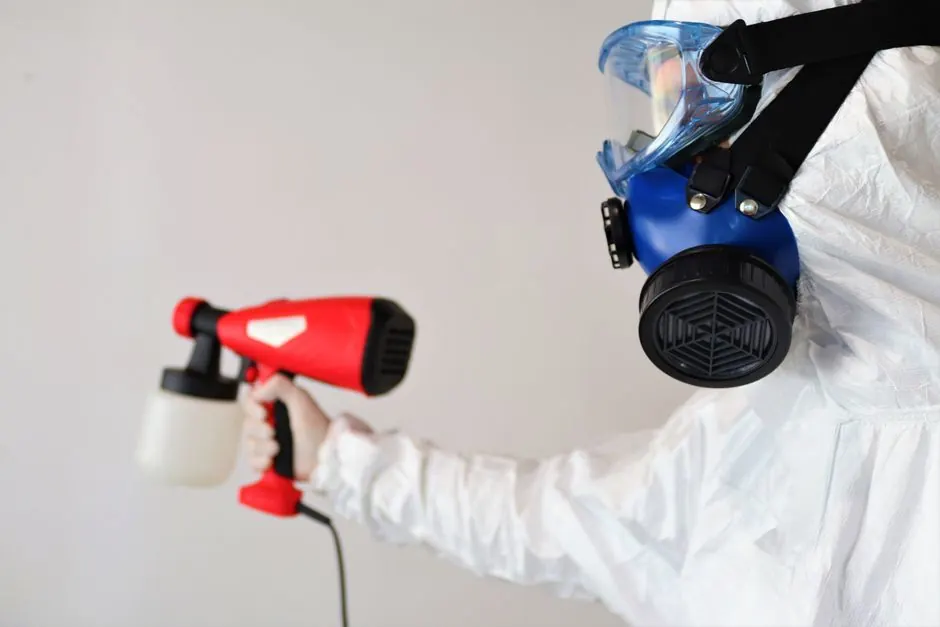

Live responseA real dispatcher, day or night

Your local team, ready to respond
Mold Remediation
in Spokane, Washington
Mold Remediation Spokane WA is essential for maintaining a healthy indoor environment. Our mold removal in Spokane ensures your home is safe and free from harmful mold growth.
- 24/7 live dispatch
- Residential & commercial
- Options before work
✓
Current responseCrews routing now
Start here
What can we help with?
No obligation. A local dispatcher confirms the next available window.
Thanks — your request is in. Dispatch will contact you shortly.
Licensed teamQualified, insured technicians
Clear optionsScope and price before work
Clean finishProtect, repair, test, tidy
Work backedWritten workmanship promise


18years of local know-how
The local standard
Trusted Mold Remediation Spokane WA Experts
Spokane Mold Experts has been providing Mold Remediation Spokane WA services since 2010, helping homeowners restore their properties and eliminate mold issues effectively.
Our team is IICRC Certified and offers 24/7 emergency mold removal Spokane services. We proudly serve neighborhoods like Downtown Spokane and South Hill, ensuring quick response times.
Complete service support
Our Mold Remediation Services
We offer comprehensive Mold Remediation services in Spokane to tackle mold issues effectively. Our 24/7 mold removal Spokane WA services ensure your home stays safe.
01!Urgent response
Mold Inspection
Our Mold Inspection service identifies hidden mold growth using advanced tools like moisture meters and infrared cameras. Ideal for homeowners in Spokane concerned about mold.
Explore Mold Inspection02↯Restore flow
Mold Testing
We provide professional Mold Testing to determine the type and extent of mold in your home. This service is crucial for residents in Spokane facing mold exposure.
Explore Mold Testing03♨Reliable service
Mold Remediation
Our Mold Remediation Spokane WA service effectively removes mold and prevents future growth. We use industry-leading techniques and products, ensuring a safe environment for your family.
Explore Mold Remediation
04⚑Trusted repairs
Water Damage Restoration
We specialize in Water Damage Restoration to address the root causes of mold. Our team in Spokane responds quickly to minimize damage and restore your property.
Explore Water Damage Restoration
05!Urgent response
Basement Flood Cleanup
Our Basement Flood Cleanup service helps homeowners in Spokane recover from flooding. We ensure proper mold removal and restoration, protecting your home from future issues.
Explore Basement Flood CleanupNot sure which category fits? Tell us what you see, hear, or smell and we'll route the right technician.
Describe the problemBrands we know and service
RheemMoenNavienKohlerDeltaBradford White
Why homeowners choose us
Why Choose Our Mold Remediation Spokane WA Services?
Our Mold Remediation Spokane WA services stand out for their effectiveness and reliability. We focus on delivering results that protect your home.

4.9Average local rating across hundreds of customer reviews
From call to all clear
Our Mold Remediation Process
You always know what happens next, what needs your approval, and how we confirm the repair worked.
Initial Inspection
Our team conducts a detailed inspection of your property to identify mold sources and assess damage.
Containment Setup
We set up containment barriers to prevent mold spores from spreading during the remediation process.
Mold Removal
Using HEPA vacuums and anti-fungal solutions, we safely remove all mold from affected areas.
Post-Remediation Verification
We conduct air quality tests to ensure all mold has been removed and your home is safe.
Built around the property
Residential care. Commercial coordination.
The principles stay the same, but access, scheduling, documentation, and load change with the property.
Residential service
Practical repairs for occupied homes, rentals, condos, and HOA-managed properties.
- Flexible windows around family schedules
- Floor and work-area protection
- Repair versus replacement guidance
- Documentation for owners and property managers
Commercial service
Response plans for restaurants, retail, offices, multifamily buildings, and light industrial sites.
- Priority scheduling and after-hours coordination
- Phased work to limit business interruption
- Site contacts, access notes, and photo records
- Preventive and multi-location service plans
Start with what you notice
Common Mold Problems We Solve
Our Mold Remediation Spokane WA services address various mold-related issues that homeowners face.
Persistent mold growth in damp areas
We eliminate mold and address moisture issues, ensuring a dry and safe living environment.
Health concerns from mold exposure
Our expert mold removal protects your family's health by removing harmful mold spores from your home.
Water damage leading to mold
We provide comprehensive water damage restoration and mold remediation to prevent future growth.
Real local feedback
What Our Customers Say
★★★★★
“Spokane Mold Experts did an amazing job removing mold from my basement after the flood. They were prompt and professional!”
★★★★★
“I was impressed by their thorough inspection and quick response. The mold is completely gone now!”
★★★★★
“Their team was efficient and knowledgeable. I highly recommend their mold removal services!”
The whole local area
Areas We Serve in Spokane
We proudly serve the Spokane community, including neighborhoods like Downtown Spokane and South Hill. Our mold removal services are available throughout the region.
Check my address →
1234
Primary dispatch zoneSame-day response depends on current call volume, technician availability, and required equipment.
How every visit runs
Prepared for the repair behind the repair.
One standard, whatever the job turns out to be — from the first call to the final test.
Prepared arrival
The right equipment is on the truck before we reach your door — matched to the symptom you reported.
Diagnosis first
We confirm the real cause before any tool goes in — so you fix the problem, not the symptom.
Contained work
Floor protection, a tidy work area, and a careful cleanup on every visit.
Tested & documented
The result is re-tested and reviewed with you, with clear notes on what comes next.
Questions before we arrive
Mold Remediation Spokane WA FAQs

Still unsure? A dispatcher can help identify the safest immediate step and the right appointment type.
Ask dispatch nowWhat is the cost of Mold Remediation in Spokane?
The cost of Mold Remediation in Spokane typically ranges from $150 for inspections to $1,200 for comprehensive services, depending on the severity of the mold issue.
How to choose a mold removal company in Spokane?
Look for a licensed and insured company with IICRC certification. Check reviews and ask for estimates before making a decision.
Where can I find affordable mold Remediation services near me?
Our services are competitively priced, offering affordable mold removal Spokane options without compromising quality. Contact us for a free estimate.
Is Mold Remediation necessary after flooding in Spokane?
Yes, Mold Remediation is crucial after flooding to prevent mold growth and protect your health. Immediate action can save your property from extensive damage.
What are the signs of mold in my Spokane home?
Signs of mold include a musty odor, visible mold growth, and health issues like allergies. If you suspect mold, contact us for an inspection.
A problem does not improve with waiting
Need Mold Remediation Spokane WA Services?
Contact us for prompt and professional Mold Remediation services in Spokane. Your safety is our priority!

Talk with the local team
Get in Touch with Us
We invite you to reach out for any mold-related concerns. Our team is available 24/7 to assist you with your needs.